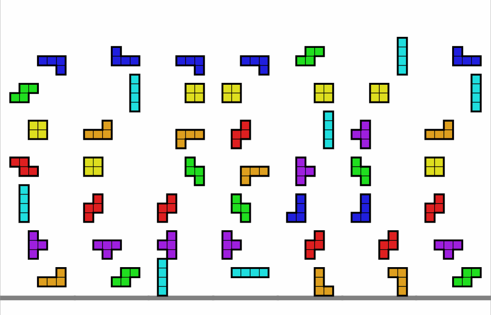

1. ¿Por qué este curso?
Este curso nace de mi sueño de crear una oportunidad para los hispanohablantes interesados en aprender coreano desde cero. Después de dos años de estudio del idioma, me di cuenta de la falta de recursos lingüísticos que ofrecieran una metodología práctica para abordar el aprendizaje de este idioma y la mentalidad necesaria para lograrlo. Este curso surge como respuesta a esa necesidad.

Diferenciación en el enfoque metodológico:
En este curso, he adoptado un enfoque único que combina la enseñanza del coreano desde sus fundamentos con estrategias de aprendizaje prácticas y efectivas.
Desde la creación de las letras coreanas, inspirada en el proceso histórico de su invención, hasta la comprensión de las reglas de lectura y la formación de sílabas, cada lección está diseñada para ofrecer una experiencia de aprendizaje profunda y significativa. Exploramos las consonantes y las vocales coreanas no solo como elementos individuales, sino como piezas de un rompecabezas lingüístico que se unen para formar palabras y frases.
Al comprender la relación entre las consonantes y las vocales, los estudiantes no solo adquieren habilidades básicas de lectura y escritura, sino que también desarrollan una comprensión más profunda de la estructura del idioma coreano.
Además, al final del curso, destacamos la importancia de las sílabas y las reglas de lectura, demostrando cómo estas siguen patrones lógicos y coherentes basados en los conceptos previamente aprendidos. Proporcionamos a los estudiantes herramientas prácticas para recordar estas reglas y aplicarlas en su lectura y escritura diarias, lo que les permite consolidar su comprensión del idioma coreano de manera efectiva y duradera.